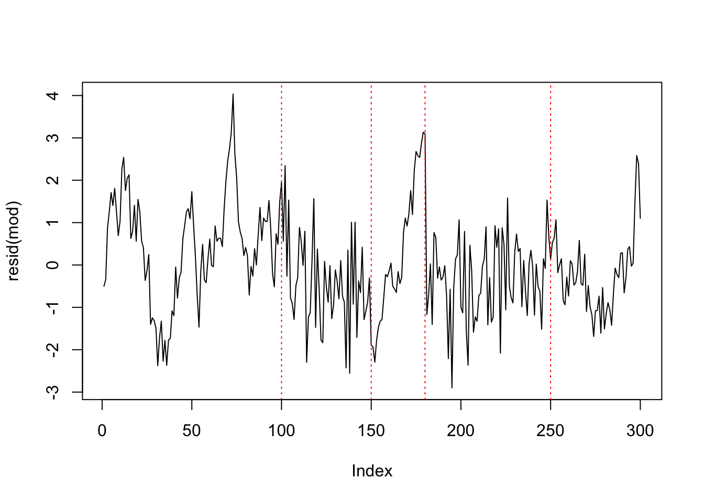
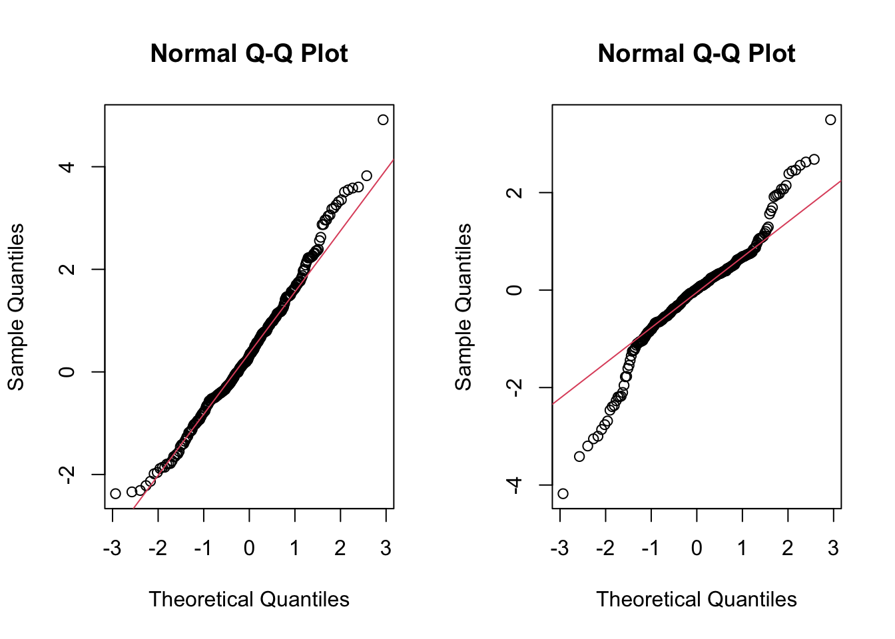

7 レジーム・スイッチング・モデル
7.1 自己回帰マルコフ・スイッチング・モデル (MSM-AR)
- パッケージMSwM
- 出所: Jose A. Sanchez-Espigares and Alberto Lopez-Moreno (2018). “MSwM examples.”
- サンプルデータ (example): シミュレーションにより生成 \[y_{t}=\begin{cases} 8+2x_{t}+\epsilon_{t}^{(1)} & \epsilon_{t}^{(1)}\sim N(0,1),\quad t=101:150,181:250\\ 1+0.9y_{t-1}+\epsilon_{t}^{(2)} & \epsilon_{t}^{(2)}\sim N(0,0.5),\quad t=1:100,151:180,251:300 \end{cases}\] ここで, \(x_t\)は外生変数 (共変量).

mod <- lm(y ~ x, example)
summary(mod)
##
## Call:
## lm(formula = y ~ x, data = example)
##
## Residuals:
## Min 1Q Median 3Q Max
## -2.8998 -0.8429 -0.0427 0.7420 4.0337
##
## Coefficients:
## Estimate Std. Error t value Pr(>|t|)
## (Intercept) 9.0486 0.1398 64.709 < 2e-16 ***
## x 0.8235 0.2423 3.398 0.00077 ***
## ---
## Signif. codes: 0 '***' 0.001 '**' 0.01 '*' 0.05 '.' 0.1 ' ' 1
##
## Residual standard error: 1.208 on 298 degrees of freedom
## Multiple R-squared: 0.03731, Adjusted R-squared: 0.03408
## F-statistic: 11.55 on 1 and 298 DF, p-value: 0.0007701
par(mfrow = c(1, 2))
qqnorm(resid(mod)); qqline(resid(mod), col = 2); acf(resid(mod))
par(mfrow = c(1, 1))
plot(resid(mod), type = "l"); abline(v=c(100, 150, 180, 250), lty = "dotted", col = "red")
→ 単回帰係数は有意. が, 残差は正規分布から乖離& 有意な自己相関が持続
7.2 MSM-ARモデルの適合
- 関数msmFit(): Fitting Markov Switching Models using the EM algorithm
- msmFit(object, k, sw, p, data, family, control)
- k: numeric, レジーム数
- sw: a logical vector, スイッチングする係数の指定
← intercept, sigmaはベクトルの両端に配置
- p: integer, AR次数 (デフォルト値=0)
- p>0のケース → the last values of sw have to contain the AR coefficients which have switching
- family: モデルのクラス (It is only required when the object is a "General linear formula")- 正しいレジーム数 (\(k=2\)), 正しいモデル構造を想定出来たものとして推定した場合:
mod.mswm <- msmFit(mod, k = 2, p = 1, sw = c(T, T, T, T), control = list(parallel = F))
summary(mod.mswm)
## Markov Switching Model
##
## Call: msmFit(object = mod, k = 2, sw = c(T, T, T, T), p = 1, control = list(parallel = F))
##
## AIC BIC logLik
## 637.0736 693.479 -312.5368
##
## Coefficients:
##
## Regime 1
## ---------
## Estimate Std. Error t value Pr(>|t|)
## (Intercept)(S) 8.6393 0.7244 11.9261 < 2.2e-16 ***
## x(S) 1.8771 0.3107 6.0415 1.527e-09 ***
## y_1(S) -0.0569 0.0797 -0.7139 0.4753
## ---
## Signif. codes: 0 '***' 0.001 '**' 0.01 '*' 0.05 '.' 0.1 ' ' 1
##
## Residual standard error: 0.9339683
## Multiple R-squared: 0.2408
##
## Standardized Residuals:
## Min Q1 Med Q3 Max
## -2.31102193 -0.03317756 0.01034139 0.04509105 2.85245598
##
## Regime 2
## ---------
## Estimate Std. Error t value Pr(>|t|)
## (Intercept)(S) 0.8417 0.3023 2.7843 0.005364 **
## x(S) -0.0533 0.1334 -0.3996 0.689451
## y_1(S) 0.9208 0.0305 30.1902 < 2.2e-16 ***
## ---
## Signif. codes: 0 '***' 0.001 '**' 0.01 '*' 0.05 '.' 0.1 ' ' 1
##
## Residual standard error: 0.5034675
## Multiple R-squared: 0.8375
##
## Standardized Residuals:
## Min Q1 Med Q3 Max
## -1.5153666375 -0.0906543356 0.0001873641 0.1656717256 1.2020898990
##
## Transition probabilities:
## Regime 1 Regime 2
## Regime 1 0.97709116 0.01500272
## Regime 2 0.02290884 0.98499728
par(mfrow = c(1, 2))
qqnorm(mod.mswm@Fit@error[, 1]); qqline(mod.mswm@Fit@error[, 1], col = 2);
qqnorm(mod.mswm@Fit@error[, 2]); qqline(mod.mswm@Fit@error[, 2],col = 2); 
→
モデルは2つのレジームを良く検出: 共変量\(x\)が有意なレジーム, 1期前ラグ変数\(y_{t-1}\)が有意なレジームを推定.
状態推定確率の対角要素(同じレジームに留まる確率)は, いずれも約0.98
レジーム#1にある状態確率の推定値 (smoothed/ filtered probabilities)

- レジーム#2にある状態確率の推定値 (平滑化 (smoothed) 確率, フィルター化 (filtered) 確率)

- 指定のレジームにおける, 反応変数, 説明変数, 状態確率の推定値 (平滑化確率) の同時プロット